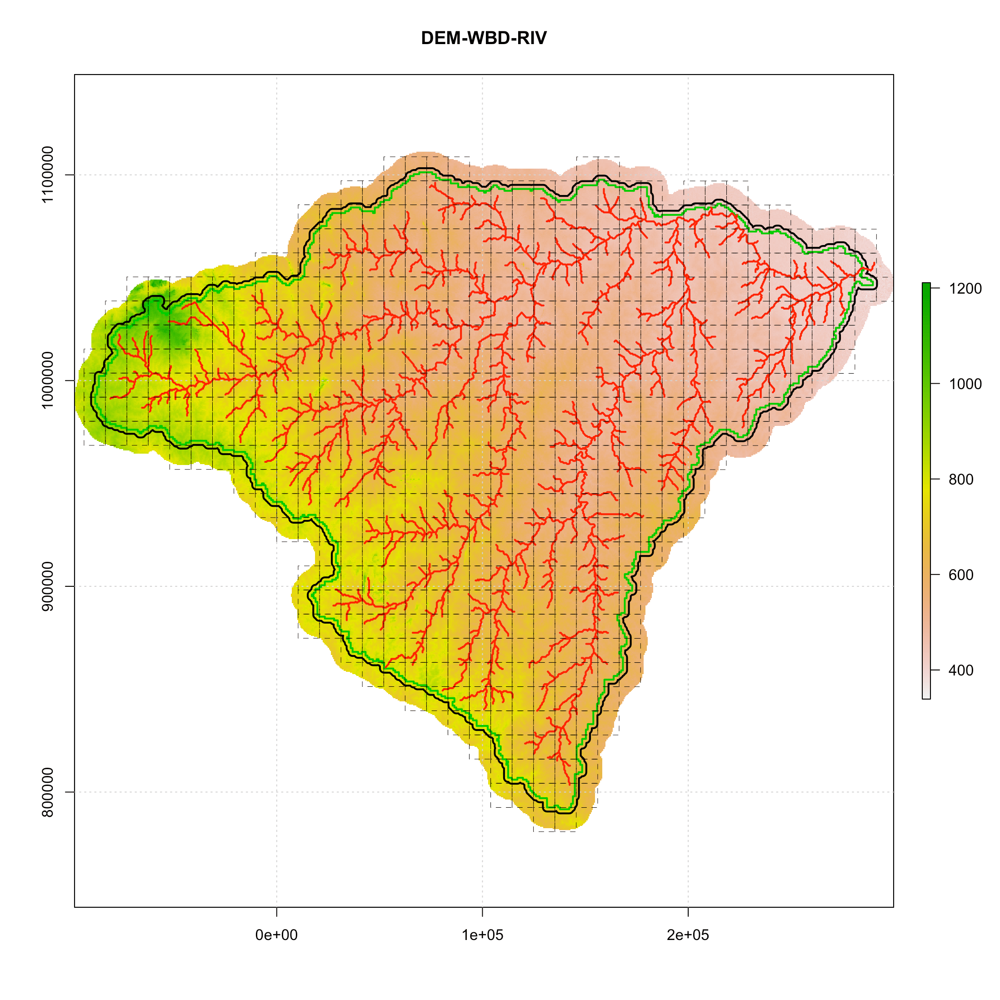
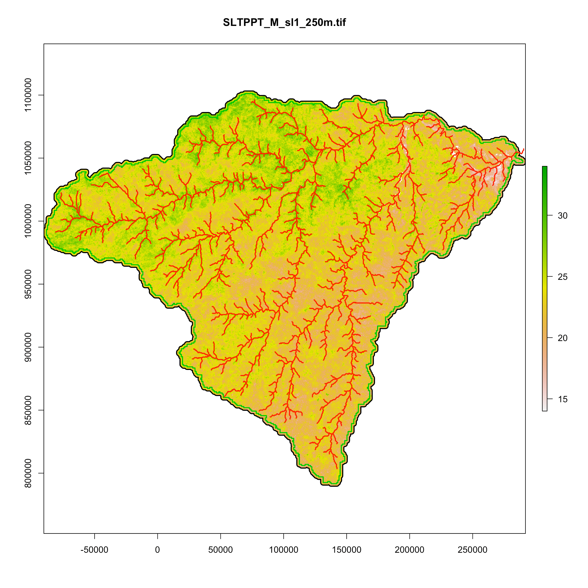
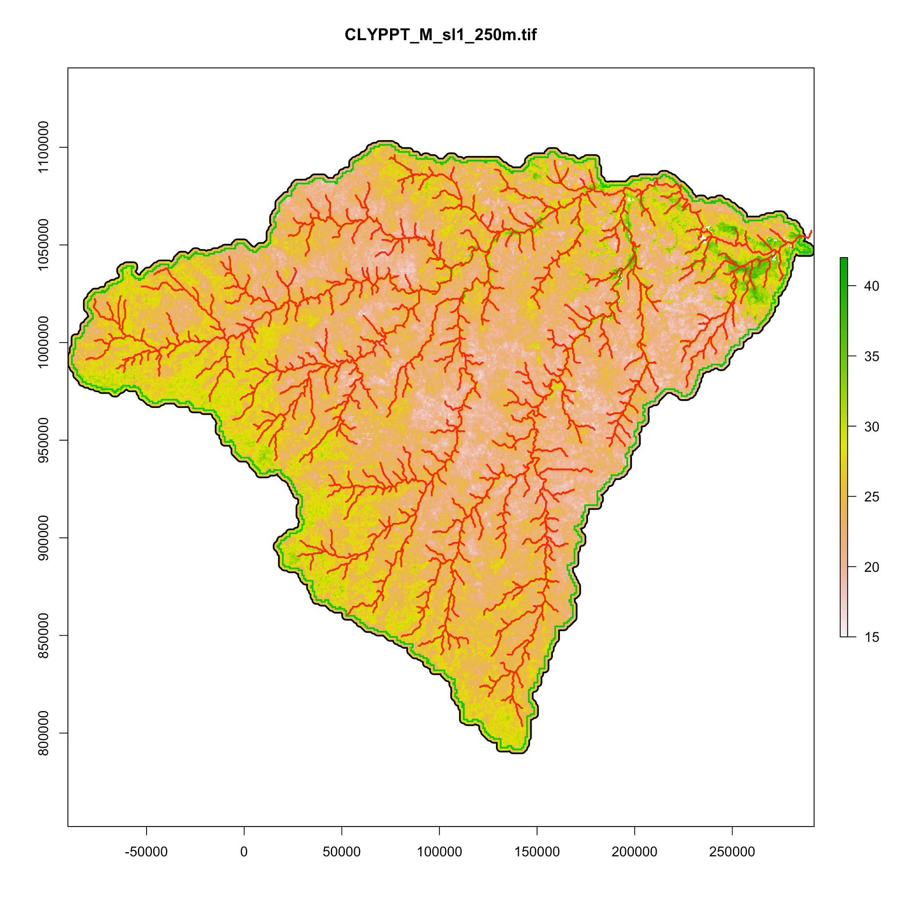
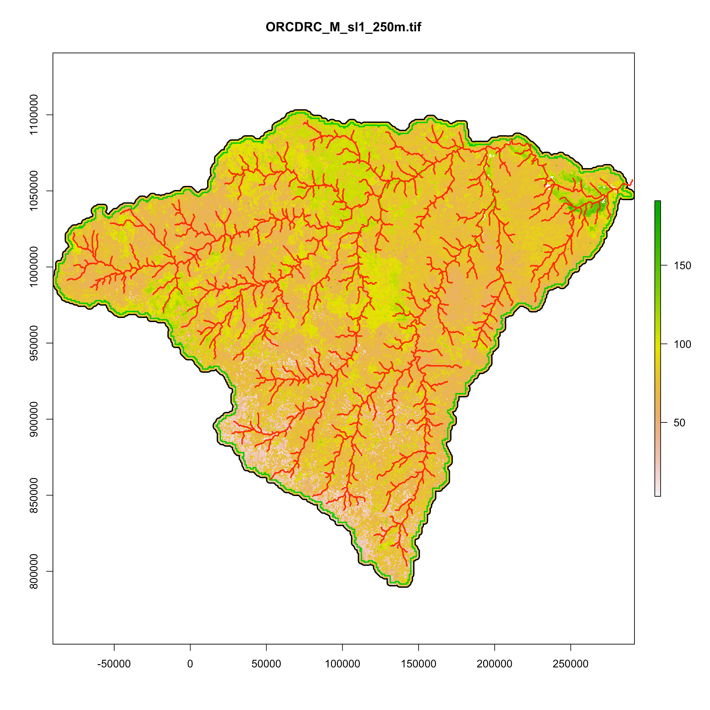
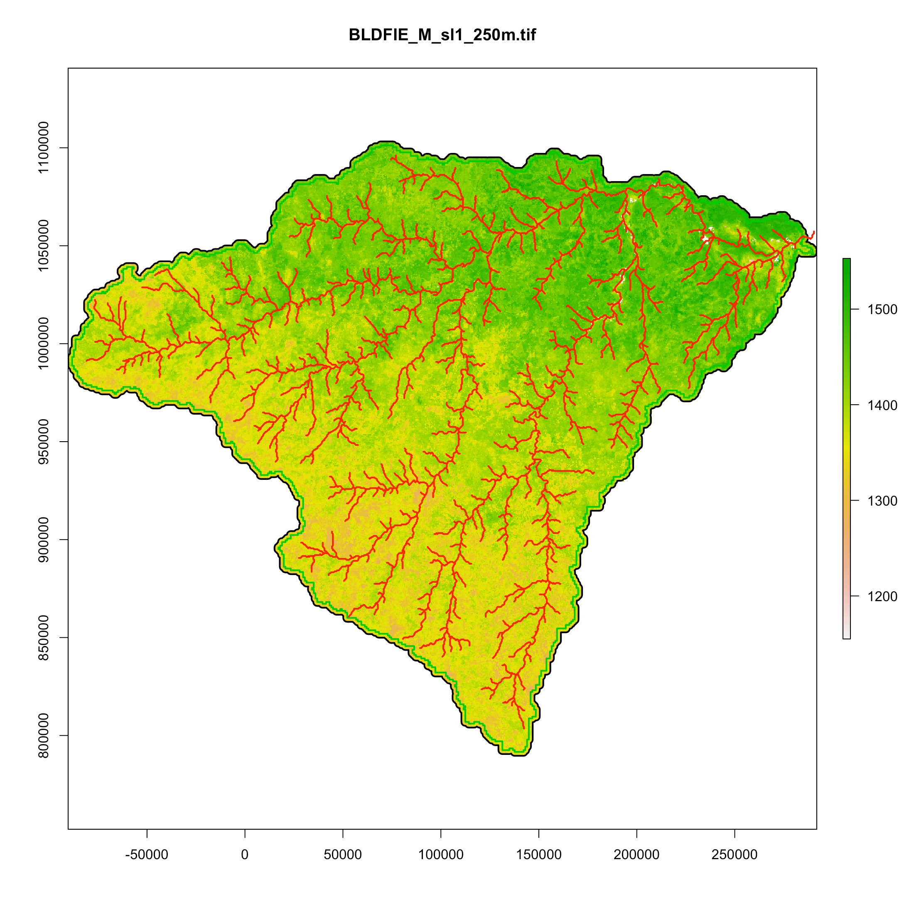
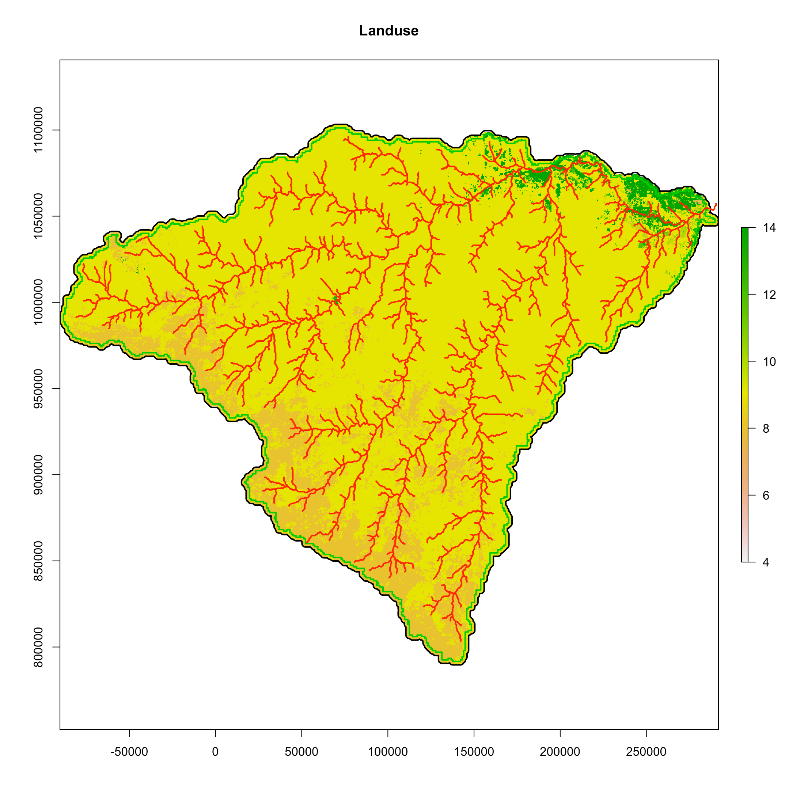
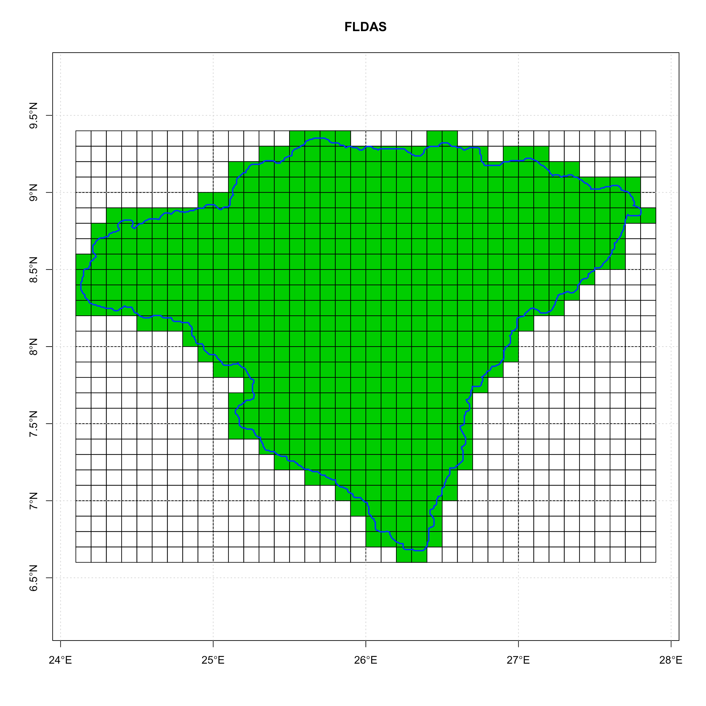
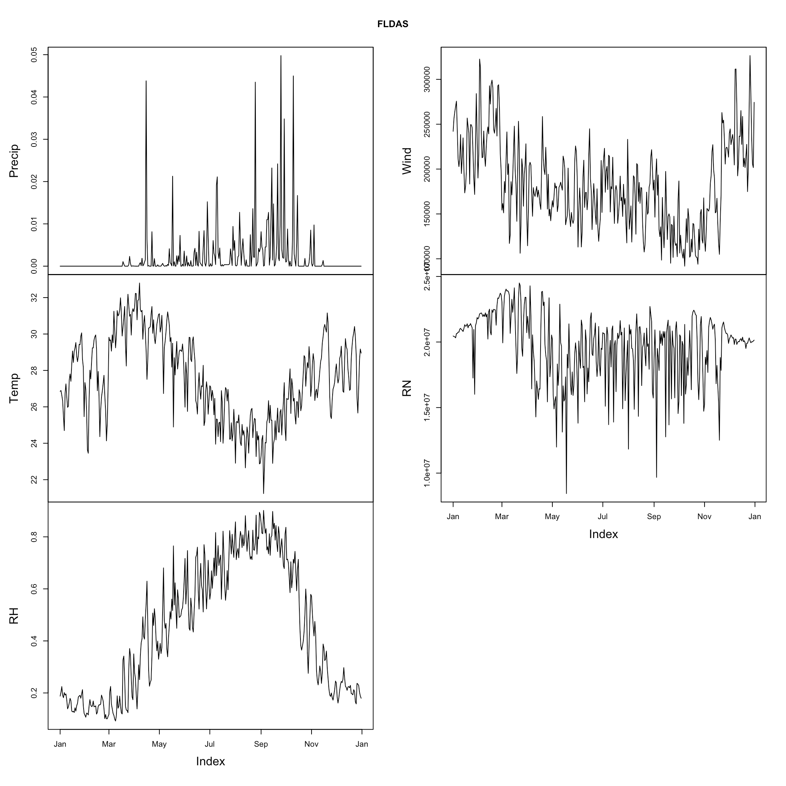
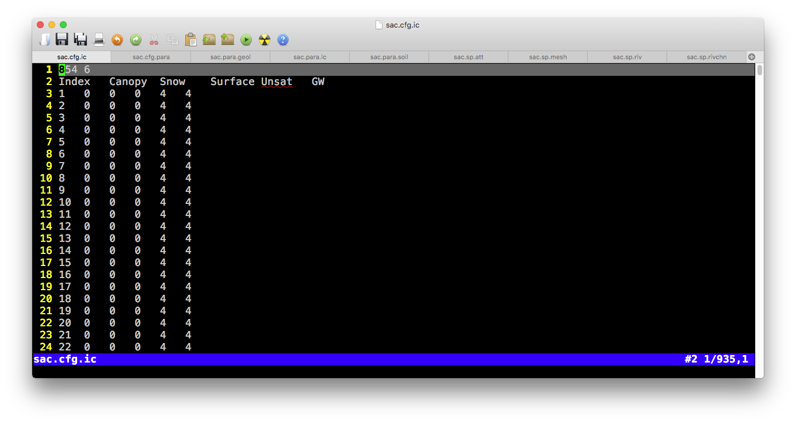
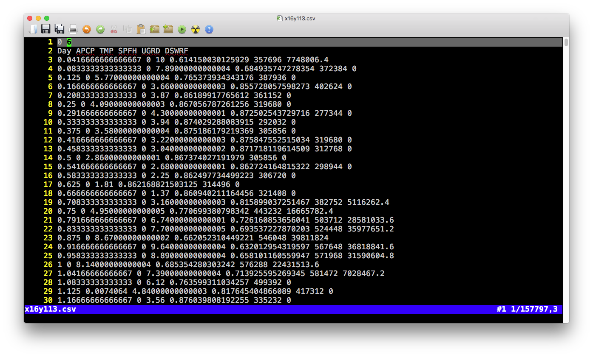

Chapter 4 数据准备
本节从原始数据要求到输入文件内涵，向用户详细介绍模型输入数据。
4.1 原始数据
| 类型 | 数据名 | 必要性 | 要求(格式、步长、数量） | 说明 |
|---|---|---|---|---|
| 空间数据 | 流域边界 | 高 | 矢量 | 连续、封闭、唯一多边形； |
| 空间数据 | 河流网络 | 高 | 矢量 | 河流具有方向性；河流无向下分叉； |
| 空间数据 | 高程 | 高 | 0 | 单位：米 |
| 空间数据 | 土地利用分类 | 中 | 矢量/栅格 | \(n_{lc}\)个分类 |
| 空间数据 | 土壤分类 | 中 | 矢量/栅格 | \(n_s\)个分类 |
| 空间数据 | 气象站点 | 中 | 矢量/栅格 | \(n_{fc}\)个站点 |
| 参数 | 土地利用 | 中 | \(n_{lc}\) 组 | 土地利用的水力学参数 |
| 参数 | 土壤 | 中 | \(n_s\)组 | 土壤性质：Silt百分比、Clay百分比、有机质含量、Bulk Density |
| 时间序列数据 | 气象驱动 | 高 | 小时～日 | 降雨、气温、湿度、辐射、风速、气压 |
| 时间序列数据 | 叶面积指数(LAI) | 中 | 小时～月 | 每类土地利用一个LAI时间序列 |
| 时间序列数据 | 融化系数 | 低 | 小时～月 | 一个时间序列 |
| 时间序列数据 | 观测数据 | 高 | 小时～月 | 通常为径流数据、地下水、蒸散发等 |
4.1.1 数据实例
|  |
|---|
| 南苏丹Pongo流域原始数据实例：流域边界（绿色实线），河流（红色实线）、DEM(背景)和气象站点覆盖范围（黑色虚线）。气象数据站点为GLDAS数据，因此为$ 0.25 x 0.25 $度覆盖范围。 |
|  |  |
|---|---|
| (a) Percentage of silt | (b) Percentage of Clay |
|  |  |
| (c) Organic mater (Organic Carbon) | (d) Bulk density |
| 南苏丹Pongo流域土壤数据：Silt百分比，Clay百分比，有机物含量，Bulk Density。数据来源：ISRIC_SoilGrids。 |
|  |
|---|
| 南苏丹Pongo流域土地利用信息。土地利用数据来自USGS GLC数据。 |
|  |
|---|
| FLDAS数据的覆盖范围，即气象站点位置信息。 |
|  |
|---|
| FLDAS的气象驱动数据。 |
4.2 模型输入文件
输入文件列表
| File | Category | 备注 | Header | # of column |
|---|---|---|---|---|
| .mesh | sp | 三角形单元定义 | 是 | |
| .att | sp | 单元属性表 | 是 | |
| .riv | sp | 河流 | 是 | |
| .rivseg | sp | 三角形单元与河道单元拓扑信息 | 是 | |
| .calib | cfg | 物理参数校准文件 | 是 | |
| .para | cfg | 模型运行设置参数文件 | 是 | |
| .ic | cfg | 模型初始条件 | 是 | |
| .geol | para | 地下水层的水力学参数 | 是 | |
| .soil | para | 浅层土壤的水力学参数 | 是 | |
| .lc | para | 土地利用的水力学和能量参数 | 是 | |
| .forc | tsd | 气象驱动数据文件的列表 | 是 | |
| .csv | tsd | 气象驱动时间序列数据 | 是 | |
| .lai | tsd | 叶面积指数 | 是 | |
| .obs | tsd | 用于校准观测时间序列数据 | 是 | |
| .mf | tsd | 融雪参数时间序列数据 | 是 | |
| .rl | tsd | 计算潜在蒸散发的粗糙度时间序列数据 | 是 | |
| gis/domain | 三角形单元的矢量文件 | x | x | |
| gis/river | Shapefile | 河段的矢量文件 | x | x |
| gis/seg | Shapefile | 被三角形分割的河段矢量文件 | x | x |

The screenshot of input files for SHUD
在文件夹 gis 和 fig 中的文件与SHUD模拟无关，然后在数据分析和可视化中有很大作用，因此保留在输入文件当中。
4.3 空间数据
4.3.1 .sp.mesh 文件


.mesh 文件中有两个表格，第一个表格为三角形的组成和拓扑关系；第二个表格为组成三角形的节点坐标信息。
表格 1 (三角形单元)
表头
| 值1 | 值2 |
|---|---|
| 行数 ( \(N_{cell}\)) | 列数 (\(8\)) |
- 表
| 列 | 含义 | 取值范围 | 单位 | 备注 |
|---|---|---|---|---|
| ID | 单元序号 \(i\) | 1 ~ \(N_{cell}\) | - | |
| Node1 | 三角形单元第1角点\(i\) | 1 ~ \(N_{node}\) | - | |
| Node2 | 三角形单元第2角点 \(i\) | 1 ~ \(N_{node}\) | - | |
| Node3 | 三角形单元第3角点 \(i\) | 1 ~ \(N_{node}\) | - | |
| Nabr1 | 三角形单元第1邻居序号\(i\) | 1 ~ \(N_{cell}\) | - | |
| Nabr2 | 三角形单元第2邻居序号\(i\) | 1 ~ \(N_{cell}\) | - | |
| Nabr3 | 三角形单元第3邻居序号\(i\) | 1 ~ \(N_{cell}\) | - | |
| Zmax | 三角形单元地表高程 | -9999 ~ +inf | \(m\) |
Block 2 (node information)
表头:
| 值1 | 值2 |
|---|---|
| 行数( \(N_{node}\)) | 列数 (\(5\)) |
- Table
| 列 | 含义 | 取值范围 | 单位 | 备注 |
|---|---|---|---|---|
| ID | 点序号 \(i\) | 1 ~ \(N_{cell}\) | - | |
| X | x坐标 \(i\) | 1 ~ \(N_{node}\) | - | |
| Y | y坐标 \(i\) | 1 ~ \(N_{node}\) | - | |
| AqDepth | 含水层厚度(地表至不透水层距离)\(i\) | 0 ~ +inf | \(m\) | |
| Elevation | 点的高程（z坐标） \(i\) | -9999 ~ +inf | \(m\) |
4.3.2 .sp.att文件

Example of .sp.att file
- 表头
| 值1 | 值2 |
|---|---|
| 行数( \(N_{cell}\)) | 列数 (\(7\)) |
- Table
| 列 | 含义 | 取值范围 | 单位 | 备注 |
|---|---|---|---|---|
| ID | 单元序号\(i\) | 1 ~ \(N_{cell}\) | - | |
| SOIL | 土壤类型序号 | 1 ~ \(N_{soil}\) | - | |
| GEOL | 类型序号 | 1 ~ \(N_{geol}\) | - | |
| LC | 类型序号 | 1 ~ \(N_{lc}\) | - | \(N_{lc}\) = \(N_{lai}\) |
| FORC | 气象站点序号 | 1 ~ \(N_{forc}\) | - | |
| MF | 融雪指数序号 | 1 ~ \(N_{mf}\) | - | |
| BC | 边界条件序号 | 1 ~ \(N_{bc}\) | - | |
| SS | 源汇序号 | 1 ~ \(N_{bc}\) | - |
4.3.3 .sp.riv文件

Example of .sp.riv file
- 表头
| 值1 | 值2 |
|---|---|
| 行数( \(N_{riv}\)) | 列数 (\(5\)) |
- 表
| 列 | 含义 | 取值范围 | 单位 | 备注 |
|---|---|---|---|---|
| ID | 河段序号\(i\) | 1 ~ \(N_{river}\) | - | |
| DOWN | 下游河段序号 | 1 ~ \(N_{river}\) | - | Negative vlaue indicates outlet |
| Type | 河流参数序号 | 1 ~ \(N_{rivertype}\) | - | |
| Slope | 河床底坡度 | -10 ~ 10 | \(m/m\) | Height/Length |
| Length | 河段长度 \(i\) | 0 ~ inf | \(m\) |

4.5 模型配置文件
4.5.1 .cfg.para文件

Example of .cfg.para file
- Table
| 列 | 含义 | 取值范围 | 单位 | Default 值 |
|---|---|---|---|---|
| VERBOSE | 输出冗余信息 | - | - | 0 |
| INIT_MODE | 初始条件模式 | 0~3 | - | 3 (0=Relief conditon, 1=Dry condition, 2=Default guess, 3=Warm start) |
| ASCII_OUTPUT | 是否输出文本格式结果 | 1/0 | - | 0 |
| Binary_OUTPUT | 是否输出二进制格式结果 | 1/0 | - | 1 |
| SPINUPDAY | 模型预热天数 | 0 ~ inf | \(day\) | 0 |
| SCR_INTV | 屏幕输出间隔 | 0 ~ \(N_{threads}\) | \(min\) | 1440 |
| ABSTOL | CVODE绝对容差 | 1e-6 ~ 0.1 | - | 0.0001 |
| RELTOL | CVODE相对容差 | 1e-6 ~ 0.1 | - | 0.0001 |
| INIT_SOLVER_STEP | 初始迭代步长 | - | \(min\) | 1 |
| MAX_SOLVER_STEP | 最大迭代步长 | 1~60 | \(min\) | 10 |
| ET_STEP | 正散发计算步长 | 1~360 | \(min\) | 60 |
| START | 模型开始时间（天数） | 0 ~ inf | \(day\) | 0 |
| END | 模型结束时间（天数） | - | \(day\) | - |
| dt_ye_snow | 储量输出步长，积雪 | 0 ~ inf | \(min\) | 1440 |
| dt_ye_surf | 储量输出步长，地表水 | 0 ~ inf | \(min\) | 1440 |
| dt_ye_unsat | 储量输出步长，未饱和层 | 0 ~ inf | \(min\) | 1440 |
| dt_ye_gw | 储量输出步长，地下水层 | 0 ~ inf | \(min\) | 1440 |
| dt_Qe_surf | 单元流量输出步长，地表水 | 0 ~ inf | \(min\) | 1440 |
| dt_Qe_sub | 单元流量输出步长， 地下水 | 0 ~ inf | \(min\) | 1440 |
| dt_qe_et0 | 单元流量输出步长，截流蒸发 | 0 ~ inf | \(min\) | 1440 |
| dt_qe_et1 | 单元流量输出步长，蒸腾 | 0 ~ inf | \(min\) | 1440 |
| dt_qe_et2 | 单元流量输出步长，蒸发 | 0 ~ inf | \(min\) | 1440 |
| dt_qe_etp | 单元流量输出步长，潜在蒸散发 | 0 ~ inf | \(min\) | 1440 |
| dt_qe_prcp | 单元流量输出步长，降雨 | 0 ~ inf | \(min\) | 1440 |
| dt_qe_infil | 单元流量输出步长，下渗 | 0 ~ inf | \(min\) | 1440 |
| dt_qe_rech | 单元流量输出步长，地下水补给 | 0 ~ inf | \(min\) | 1440 |
| dt_yr_stage | 河段储量输出步长，河道 | 0 ~ inf | \(min\) | 1440 |
| dt_Qr_down | 河段流量输出步长，向下游 | 0 ~ inf | \(min\) | 1440 |
| dt_Qr_surf | 河段流量输出步长，向坡面 | 0 ~ inf | \(min\) | 1440 |
| dt_Qr_sub | 河段流量输出步长，向地下水 | 0 ~ inf | \(min\) | 1440 |
| dt_Qr_up | 河段流量输出步长，向上游 | 0 ~ inf | \(min\) | 1440 |
4.5.2 .cfg.calib文件

Example of .cfg.calib file
- Table
| 列 | 含义 | 取值范围 | 单位 | 备注 |
|---|---|---|---|---|
| GEOL_KSATH | 水平水力传导度，地下水层 | ? | - | |
| GEOL_KSATV | 垂直水力传导度，地下水层 | ? | - | |
| GEOL_KMACSATH | 大孔隙水平水力传导度，地下水层 | ? | - | |
| GEOL_DMAC | 大孔隙深度，地下水层 | - | ||
| GEOL_THETAS | 地下水层孔隙度，地下水层 | - | ||
| GEOL_THETAR | 土壤残留含水量，地下水层 | - | ||
| GEOL_MACVF | 大孔隙面积比，地下水层 | - | ||
| SOIL_KINF | 饱和水力传导度，未饱和层 | ? | - | |
| SOIL_KMACSATV | 大孔隙垂向水力传导度，未饱和层 | ? | - | |
| SOIL_DINF | 下渗深度参数，未饱和层 | ? | - | |
| SOIL_ALPHA | \(\alpha\)值，van Genuchten公式 | - | ||
| SOIL_BETA | \(\beta\)值，van Genuchten公式 | - | ||
| SOIL_MACHF | 大孔隙面积比，未饱和层 | - | ||
| LC_VEGFRAC | 植被覆盖度 | - | ||
| LC_ALBEDO | 反照率 | - | ||
| LC_ROUGH | 地表曼宁粗糙度 | - | ||
| LC_SOILDGD | 土壤劣化系数 | - | ||
| LC_IMPAF | 不透水面积比 | - | ||
| LC_ISMAX | 最大截流系数 | - | ||
| AQ_DEPTH+ | 含水层深度 | \(m\) | ||
| TS_PRCP | 降雨 | - | ||
| TS_SFCTMP+ | 温度 | \(C\) | ||
| ET_ETP | 潜在蒸散发 | - | ||
| ET_IC | 冠层截流 | - | ||
| ET_TR | 植被蒸腾 | - | ||
| ET_SOIL | 直接蒸发 | - | ||
| RIV_ROUGH | 河道曼宁粗糙度 | - | ||
| RIV_KH | 河床水力传导度 | - | ||
| RIV_DPTH+ | 河道深度 | \(m\) | ||
| RIV_WDTH+ | 河道宽度 | \(m\) | ||
| RIV_SINU | 河道绵延度 | - | ||
| RIV_CWR | 谢才公式系数\(C_{wr}\) | - | ||
| RIV_BSLOPE+ | 河床坡度 | \(m/m\) | ||
| IC_GW+ | 地下水水位初始条件 | \(m\) | ||
| IC_RIV+ | 河道水量初始条件 | \(m\) |
4.5.3 .cfg.ic文件

Example of .cfg.ic file
表1 (三角单元初始条件)
表头
| 值1 | 值2 |
|---|---|
| 行数( \(N_{cell}\)) | 列数 (\(6\)) |
- Table
| 列 | 含义 | 取值范围 | 单位 | 备注 |
|---|---|---|---|---|
| ID | 单元序号\(i\) | 1 ~ \(N_{cell}\) | - | |
| Canopy | 冠层截流 \(i\) | 0 ~ inf | \(m\) | |
| Snow | 积雪 \(i\) | 0 ~ inf | \(m\) | |
| Surface | 地表水 \(i\) | 0 ~ inf | \(m\) | |
| Unsat | 未饱和层水 \(i\) | 0 ~ inf | \(m\) | |
| GW | 地下水 \(i\) | 0 ~ inf | \(m\) |
表2 (河段初始条件)
表头:
| 值1 | 值2 |
|---|---|
| 行数( \(N_{riv}\)) | 列数 (\(2\)) |
- Table
| 列 | 含义 | 取值范围 | 单位 | 备注 |
|---|---|---|---|---|
| ID | 河段序号 \(i\) | 1 ~ \(N_{riv}\) | - | |
| Stage | 河段水位 \(i\) | 0 ~ inf | \(m\) |
4.6 时间序列数据
4.6.1 .tsd.forc文件

Example of .tsd.forc file
- Line 1:
气象站点数量 | 开始日期 (YYYYMMDD) - Line 2: 驱动数据文件所在文件夹
- Line 3~N: 时间序列数据文件名

Example of .csv forcing file
- 表头:
| 值1 | 值2 |
|---|---|
| ( \(0\)) | 列数 (\(6\)) |
- Table
| 列 | 含义 | 取值范围 | 单位 | 备注 |
|---|---|---|---|---|
| Day | 日数 | 0 ~ \(N_{day}\) | \(day\) | |
| PRCP | 降雨 | 0 ~ 1 | \(mm/day\) | |
| TEMP | 气温 | -100 ~ 70 | \(C\) | |
| RH | 相对湿度 | 0 ~ 1 | \(-\) | |
| wind | 风速 | 0 ~ inf | \(m/s\) | |
| Rn | 太阳净辐射 | ? | \(W/m^2\) |
4.6.2 .tsd.lai文件

Example of .tsd.lai file
- 表头:
| 值1 | 值2 | 值3 |
|---|---|---|
| 天数 ( \(N_{time}\)) | 列数 (\(N_{lc}\)) | 开始日期 (YYYYMMDD) |
- Table
| 列 | 含义 | 取值范围 | 单位 | 备注 |
|---|---|---|---|---|
| 第一列 | 时间 | 0 ~ \(N_{time}\) | \(day\) | |
| 第2列 | 叶面积指数1 | 0 ~ inf | \(m^2/m^2\) | |
| 第i列 | 叶面积指数\(i-1\) | 0 ~ inf | \(m^2/m^2\) | |
| … | … | … | … |
4.6.3 .tsd.rl文件

Example of .tsd.rl file
- 表头:
| 值1 | 值2 | 值3 |
|---|---|---|
| 天数 ( \(N_{time}\)) | 列数 (\(N_{lc}\)) | 开始日期 (YYYYMMDD) |
- Table
| 列 | 含义 | 取值范围 | 单位 | 备注 |
|---|---|---|---|---|
| 第一列 | 时间 | 0 ~ \(N_{time}\) | \(day\) | |
| 第2列 | 粗糙度1 | 0 ~ inf | \(m\) | |
| 第i列 | 粗糙度\(i-1\) | 0 ~ inf | \(m\) | |
| … | … | … | … |